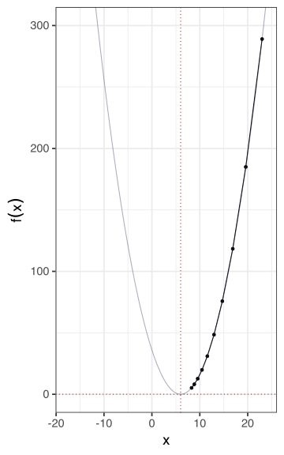
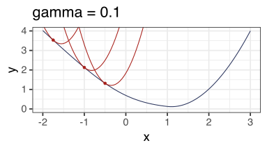
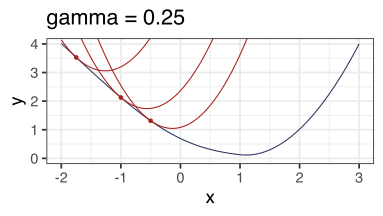
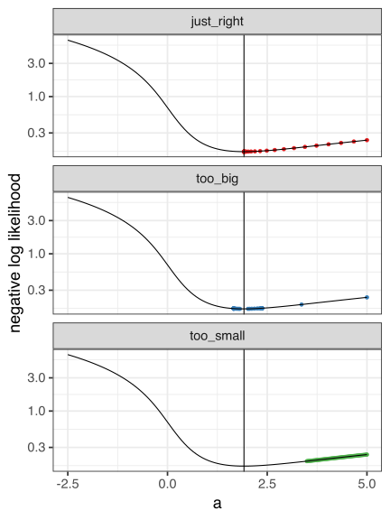

00 Gradient descent
Stat 406
Geoff Pleiss, Trevor Campbell
Last modified – 25 October 2023
\[ \DeclareMathOperator*{\argmin}{argmin} \DeclareMathOperator*{\argmax}{argmax} \DeclareMathOperator*{\minimize}{minimize} \DeclareMathOperator*{\maximize}{maximize} \DeclareMathOperator*{\find}{find} \DeclareMathOperator{\st}{subject\,\,to} \newcommand{\E}{E} \newcommand{\Expect}[1]{\E\left[ #1 \right]} \newcommand{\Var}[1]{\mathrm{Var}\left[ #1 \right]} \newcommand{\Cov}[2]{\mathrm{Cov}\left[#1,\ #2\right]} \newcommand{\given}{\ \vert\ } \newcommand{\X}{\mathbf{X}} \newcommand{\x}{\mathbf{x}} \newcommand{\y}{\mathbf{y}} \newcommand{\P}{\mathcal{P}} \newcommand{\R}{\mathbb{R}} \newcommand{\norm}[1]{\left\lVert #1 \right\rVert} \newcommand{\snorm}[1]{\lVert #1 \rVert} \newcommand{\tr}[1]{\mbox{tr}(#1)} \newcommand{\brt}{\widehat{\beta}^R_{s}} \newcommand{\brl}{\widehat{\beta}^R_{\lambda}} \newcommand{\bls}{\widehat{\beta}_{ols}} \newcommand{\blt}{\widehat{\beta}^L_{s}} \newcommand{\bll}{\widehat{\beta}^L_{\lambda}} \]
Simple optimization techniques
We’ll see “gradient descent” a few times:
- solves logistic regression (simple version of IRWLS)
- gradient boosting
- Neural networks
This seems like a good time to explain it.
So what is it and how does it work?
Very basic example
Suppose I want to minimize \(f(x)=(x-6)^2\) numerically.
I start at a point (say \(x_1=23\))
I want to “go” in the negative direction of the gradient.
The gradient (at \(x_1=23\)) is \(f'(23)=2(23-6)=34\).
Move current value toward current value - 34.
\(x_2 = x_1 - \gamma 34\), for \(\gamma\) small.
In general, \(x_{n+1} = x_n -\gamma f'(x_n)\).

Why does this work?
Heuristic interpretation:
Gradient tells me the slope.
negative gradient points toward the minimum
go that way, but not too far (or we’ll miss it)
Why does this work?
More rigorous interpretation:
Taylor expansion \[ f(x) \approx f(x_0) + \nabla f(x_0)^{\top}(x-x_0) + \frac{1}{2}(x-x_0)^\top H(x_0) (x-x_0) \]
replace \(H\) with \(\gamma^{-1} I\)
minimize this quadratic approximation in \(x\): \[ 0\overset{\textrm{set}}{=}\nabla f(x_0) + \frac{1}{\gamma}(x-x_0) \Longrightarrow x = x_0 - \gamma \nabla f(x_0) \]
Visually
Visually
What \(\gamma\)? (more details than we have time for)
What to use for \(\gamma_k\)?
Fixed
- Only works if \(\gamma\) is exactly right
- Usually does not work
Decay on a schedule
\(\gamma_{n+1} = \frac{\gamma_n}{1+cn}\) or \(\gamma_{n} = \gamma_0 b^n\)
Exact line search
- Tells you exactly how far to go.
- At each iteration \(n\), solve \(\gamma_n = \arg\min_{s \geq 0} f( x^{(n)} - s f(x^{(n-1)}))\)
- Usually can’t solve this.
\[ f(x_1,x_2) = x_1^2 + 0.5x_2^2\]
\[ f(x_1,x_2) = x_1^2 + 0.5x_2^2\]

\[ f(x_1,x_2) = x_1^2 + 0.5x_2^2\]
\[ f(x_1,x_2) = x_1^2 + 0.5x_2^2\]

\[ f(x_1,x_2) = x_1^2 + 0.5x_2^2\]

When do we stop?
For \(\epsilon>0\), small
Check any / all of
- \(|f'(x)| < \epsilon\)
- \(|x^{(k)} - x^{(k-1)}| < \epsilon\)
- \(|f(x^{(k)}) - f(x^{(k-1)})| < \epsilon\)
Stochastic gradient descent
Suppose \(f(x) = \frac{1}{n}\sum_{i=1}^n f_i(x)\)
Like if \(f(\beta) = \frac{1}{n}\sum_{i=1}^n (y_i - x^\top_i\beta)^2\).
Then \(f'(\beta) = \frac{1}{n}\sum_{i=1}^n f'_i(\beta) = \frac{1}{n} \sum_{i=1}^n -2x_i^\top(y_i - x^\top_i\beta)\)
If \(n\) is really big, it may take a long time to compute \(f'\)
So, just sample some partition our data into mini-batches \(\mathcal{M}_j\)
And approximate (imagine the Law of Large Numbers, use a sample to approximate the population) \[f'(x) = \frac{1}{n}\sum_{i=1}^n f'_i(x) \approx \frac{1}{m}\sum_{i\in\mathcal{M}_j}f'_{i}(x)\]
SGD
\[ \begin{aligned} f'(\beta) &= \frac{1}{n}\sum_{i=1}^n f'_i(\beta) = \frac{1}{n} \sum_{i=1}^n -2x_i^\top(y_i - x^\top_i\beta)\\ f'(x) &= \frac{1}{n}\sum_{i=1}^n f'_i(x) \approx \frac{1}{m}\sum_{i\in\mathcal{M}_j}f'_{i}(x) \end{aligned} \]
Usually cycle through “mini-batches”:
- Use a different mini-batch at each iteration of GD
- Cycle through until we see all the data
This is the workhorse for neural network optimization
Practice with GD and Logistic regression
Gradient descent for Logistic regression
Suppose \(Y=1\) with probability \(p(x)\) and \(Y=0\) with probability \(1-p(x)\), \(x \in \R\).
I want to model \(P(Y=1| X=x)\).
I’ll assume that \(\log\left(\frac{p(x)}{1-p(x)}\right) = ax\) for some scalar \(a\). This means that \(p(x) = \frac{\exp(ax)}{1+\exp(ax)} = \frac{1}{1+\exp(-ax)}\)
Reminder: the likelihood
\[ L(y | a, x) = \prod_{i=1}^n p(x_i)^{y_i}(1-p(x_i))^{1-y_i}\textrm{ and } p(x) = \frac{1}{1+\exp(-ax)} \]
\[ \begin{aligned} \ell(y | a, x) &= \log \prod_{i=1}^n p(x_i)^{y_i}(1-p(x_i))^{1-y_i} = \sum_{i=1}^n y_i\log p(x_i) + (1-y_i)\log(1-p(x_i))\\ &= \sum_{i=1}^n\log(1-p(x_i)) + y_i\log\left(\frac{p(x_i)}{1-p(x_i)}\right)\\ &=\sum_{i=1}^n ax_i y_i + \log\left(1-p(x_i)\right)\\ &=\sum_{i=1}^n ax_i y_i + \log\left(\frac{1}{1+\exp(ax_i)}\right) \end{aligned} \]
Reminder: the likelihood
\[ L(y | a, x) = \prod_{i=1}^n p(x_i)^{y_i}(1-p(x_i))^{1-y_i}\textrm{ and } p(x) = \frac{1}{1+\exp(-ax)} \]
Now, we want the negative of this. Why?
We would maximize the likelihood/log-likelihood, so we minimize the negative likelihood/log-likelihood (and scale by \(1/n\))
\[-\ell(y | a, x) = \frac{1}{n}\sum_{i=1}^n -ax_i y_i - \log\left(\frac{1}{1+\exp(ax_i)}\right)\]
Reminder: the likelihood
\[ \frac{1}{n}L(y | a, x) = \frac{1}{n}\prod_{i=1}^n p(x_i)^{y_i}(1-p(x_i))^{1-y_i}\textrm{ and } p(x) = \frac{1}{1+\exp(-ax)} \]
This is, in the notation of our slides \(f(a)\).
We want to minimize it in \(a\) by gradient descent.
So we need the derivative with respect to \(a\): \(f'(a)\).
Now, conveniently, this simplifies a lot.
\[ \begin{aligned} \frac{d}{d a} f(a) &= \frac{1}{n}\sum_{i=1}^n -x_i y_i - \left(-\frac{x_i \exp(ax_i)}{1+\exp(ax_i)}\right)\\ &=\frac{1}{n}\sum_{i=1}^n -x_i y_i + p(x_i)x_i = \frac{1}{n}\sum_{i=1}^n -x_i(y_i-p(x_i)). \end{aligned} \]
Reminder: the likelihood
\[ \frac{1}{n}L(y | a, x) = \frac{1}{n}\prod_{i=1}^n p(x_i)^{y_i}(1-p(x_i))^{1-y_i}\textrm{ and } p(x) = \frac{1}{1+\exp(-ax)} \]
(Simple) gradient descent to minimize \(-\ell(a)\) or maximize \(L(y|a,x)\) is:
- Input \(a_1,\ \gamma>0,\ j_\max,\ \epsilon>0,\ \frac{d}{da} -\ell(a)\).
- For \(j=1,\ 2,\ \ldots,\ j_\max\), \[a_j = a_{j-1} - \gamma \frac{d}{da} (-\ell(a_{j-1}))\]
- Stop if \(\epsilon > |a_j - a_{j-1}|\) or \(|d / da\ \ell(a)| < \epsilon\).
Reminder: the likelihood
\[ \frac{1}{n}L(y | a, x) = \frac{1}{n}\prod_{i=1}^n p(x_i)^{y_i}(1-p(x_i))^{1-y_i}\textrm{ and } p(x) = \frac{1}{1+\exp(-ax)} \]
amle <- function(x, y, a0, gam = 0.5, jmax = 50, eps = 1e-6) {
a <- double(jmax) # place to hold stuff (always preallocate space)
a[1] <- a0 # starting value
for (j in 2:jmax) { # avoid possibly infinite while loops
px <- logit(a[j - 1] * x)
grad <- mean(-x * (y - px))
a[j] <- a[j - 1] - gam * grad
if (abs(grad) < eps || abs(a[j] - a[j - 1]) < eps) break
}
a[1:j]
}Try it:
[1] 5.000 3.360 2.019 1.815 2.059 1.782 2.113 1.746 2.180 1.711 2.250 1.684
[13] 2.309 1.669 2.344 1.663 2.359 1.661 2.364 1.660 2.365 1.660 2.366 1.660
[25] 2.366 1.660 2.366 1.660 2.366 1.660 2.366 1.660 2.366 1.660 2.366 1.660
[37] 2.366 1.660 2.366 1.660 2.366 1.660 2.366 1.660 2.366 1.660 2.366 1.660
[49] 2.366 1.660 [1] 5.000 4.967 4.934 4.902 4.869 4.837 4.804 4.772 4.739 4.707 4.675 4.643
[13] 4.611 4.579 4.547 4.515 4.483 4.451 4.420 4.388 4.357 4.326 4.294 4.263
[25] 4.232 4.201 4.170 4.140 4.109 4.078 4.048 4.018 3.988 3.957 3.927 3.898
[37] 3.868 3.838 3.809 3.779 3.750 3.721 3.692 3.663 3.635 3.606 3.578 3.550
[49] 3.522 3.494 [1] 5.000 4.672 4.351 4.038 3.735 3.445 3.171 2.917 2.688 2.488 2.322 2.191
[13] 2.094 2.027 1.983 1.956 1.940 1.930 1.925 1.922 1.920 1.919 1.918 1.918
[25] 1.918 1.918 1.918 1.917 1.917 1.917 1.917Visual
negll <- function(a) {
-a * mean(x * y) -
rowMeans(log(1 / (1 + exp(outer(a, x)))))
}
blah <- list_rbind(
map(
rlang::dots_list(
too_big, too_small, just_right, .named = TRUE
),
as_tibble),
names_to = "gamma"
) |> mutate(negll = negll(value))
ggplot(blah, aes(value, negll)) +
geom_point(aes(colour = gamma)) +
facet_wrap(~gamma, ncol = 1) +
stat_function(fun = negll, xlim = c(-2.5, 5)) +
scale_y_log10() +
xlab("a") +
ylab("negative log likelihood") +
geom_vline(xintercept = tail(just_right, 1)) +
scale_colour_brewer(palette = "Set1") +
theme(legend.position = "none")
Check vs. glm()
Call:
glm(formula = y ~ x - 1, family = "binomial")
Coefficients:
Estimate Std. Error z value Pr(>|z|)
x 1.9174 0.4785 4.008 6.13e-05 ***
---
Signif. codes: 0 '***' 0.001 '**' 0.01 '*' 0.05 '.' 0.1 ' ' 1
(Dispersion parameter for binomial family taken to be 1)
Null deviance: 138.629 on 100 degrees of freedom
Residual deviance: 32.335 on 99 degrees of freedom
AIC: 34.335
Number of Fisher Scoring iterations: 7UBC Stat 406 - 2024